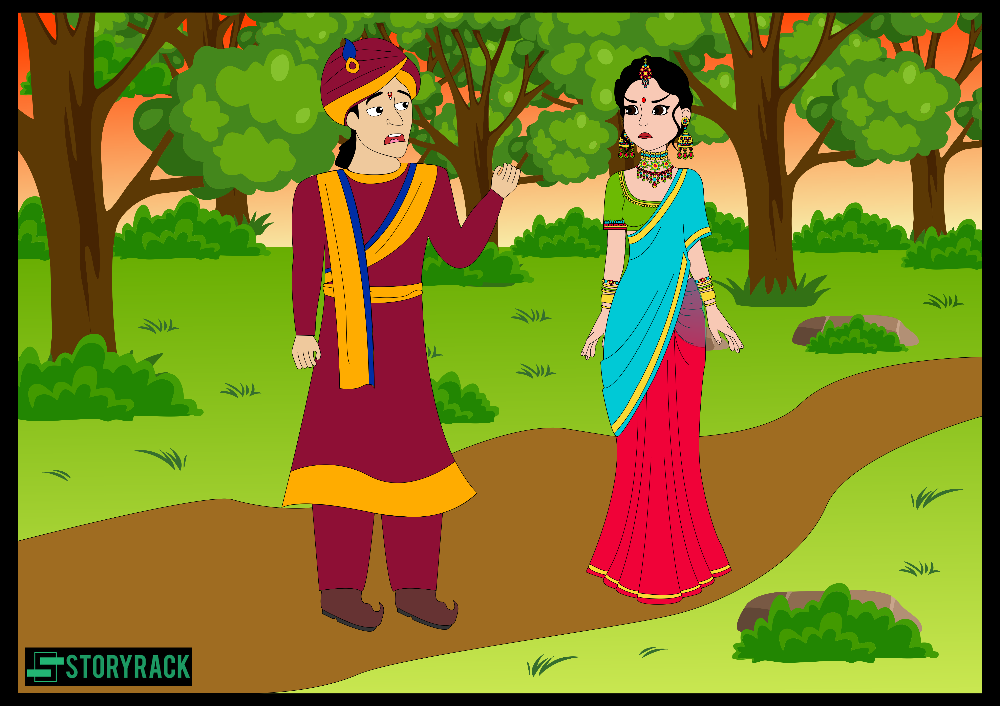

"બીરબરે ફરીથી તેની પત્નીને સંબોધીને કહ્યું, 'જો તમે સ્વેચ્છાએ તમારા બાળકને છોડી દો, તો હું તેને લઈ જઈશ અને રાજા માટે તેનું બલિદાન આપીશ.' ' તેણીએ જવાબ આપતાં કહ્યું, 'મને પુત્ર, પુત્રી, ભાઈ, સગાંવહાલાં, માતા, પિતા કે કોઈની પણ ચિંતા નથી; તમારાથી જ કિરણ પ્રસન્ન થાય છે; અને નૈતિક સંહિતામાં પણ આમ લખ્યું છે, - 'સ્ત્રી ન તો અર્પણ દ્વારા કે ધાર્મિક કાર્યાલયો દ્વારા શુદ્ધ થતી નથી; તેણીના પ્રદેશમાં તેના પતિની સેવા અને સન્માનનો સમાવેશ થાય છે, પછી ભલે તે લંગડો હોય, હાથમાં અપંગ હોય, મૂંગો હોય, બહેરો હોય, બંને આંખોથી અંધ હોય, એક આંખનો અંધ હોય. , એક રક્તપિત્ત, કુંડળ-સમર્થિત, - તે ગમે તે પ્રકારનો હોય, જો તેણી વિશ્વમાં સદ્ગુણ કાર્યનું કોઈપણ વર્ણન કરે છે, જ્યારે તેણી તેના પતિનું પાલન કરતી નથી, તો તે નરકમાં પડશે.' તેના પુત્રે કહ્યું, 'પિતાજી! જે માણસ દ્વારા તેના માલિકનો વ્યવસાય પૂરો થાય છે - શ્રીમતી સંસારમાં રહે છે તે લાભ સાથે હાજર છે; અને આમાં બંને જગતમાં ફાયદો છે.' ત્યારે તેની દીકરીએ કહ્યું, 'જો મા દીકરીને ઝેર આપે અને બાપ દીકરાને વેચી નાખે અને રાજા બધું ખાઈ જાય, તો આપણે કોની રક્ષા કરીશું?'
" ઉપરોક્ત રીત પછી ચારેય એકબીજા સાથે વિચાર-વિમર્શ કરીને દેવીના મંદિરે ગયા. રાજા પણ ગુપ્ત રીતે તેમની પાછળ ગયો. જ્યારે બીરબર ત્યાં પહોંચ્યો, ત્યારે તેણે મંદિરમાં પ્રવેશ કરી, દેવીની આરાધના કરી, અને હાથ જોડીને પ્રાર્થના કરી. , અને કહ્યું, 'હે દેવી! મારા પુત્રના બલિદાનથી રાજા સો વર્ષ જીવે એવી અનુદાન આપો.' આટલું કહીને તેણે તલવારનો એવો ફટકો માર્યો કે તેના પુત્રનું માથું જમીન પર પડી ગયું.તેના ભાઈના મૃત્યુની સાક્ષીએ પુત્રીએ તલવાર વડે પોતાના જ ગળા પર એવો ફટકો માર્યો કે તેનું માથું અને શરીર અલગ પડી ગયા. તેનો પુત્ર અને પુત્રી મૃત્યુ પામ્યા, બીરબરની પત્નીએ પોતાની ગરદન પર તલવારથી એવો પ્રહાર કર્યો કે તેનું માથું તેના શરીરથી વિચ્છેદ થઈ ગયું.વધુમાં, તે ત્રણેયના મૃત્યુને જોઈને, બીરબર તેના મનમાં ચિંતન કરીને કહેવા લાગ્યો, ' જ્યારે મારો પુત્ર મૃત્યુ પામે છે, ત્યારે હું કોની સેવામાં રાખું? અને રાજા પાસેથી મને મળેલું સોનું હું કોને આપું?' આમ વિચારીને, તેણે પોતાની ગરદન પર તલવારનો એવો ફટકો માર્યો કે તેનું માથું સુશ્રીના શરીરથી અલગ થઈ ગયું. આ ચારેયના મૃત્યુને જોઈને રાજાએ ફરીથી મનમાં કહ્યું, 'મારા ખાતર તેમના જીવ કુટુંબ નાશ પામ્યું છે; તે હવે શાપિત છે કે એક રાજ્યનું શાસન ચલાવવું કે જેના માટે એકનું આખું કુટુંબ નાશ પામે છે, જ્યારે કોઈ સાર્વભૌમત્વ ધરાવે છે; આ રીતે શાસન કરવું તે કોઈ સદ્ગુણ નથી.' આમ વિચારીને, રાજા તલવાર વડે આત્મહત્યા કરવા પર હતો, જો કે, તે દરમિયાન, દેવીએ આવીને તેનો હાથ પકડી લીધો, અને કહ્યું, 'પુત્ર! તમે મને પૂછી શકો.' રાજાએ કહ્યું, 'મા, જો તમે રાજી હો, તો આ ચારને જીવિત કરો.' દેવીએ કહ્યું, 'આ જ થશે,' અને તે કહેતાની સાથે જ, ભવાનીએ છેવાડાના પ્રદેશોમાંથી જીવનનું પાણી લાવ્યું, અને ચારેયને પુનર્જીવિત કર્યા. તે પછી રાજાએ તેનું અડધુ રાજ્ય બીરબરને આપી દીધું."
આટલું બધું કહીને, સ્પ્રાઇટે કહ્યું, "ધન્ય છે તે નોકર કે જેણે તેના માલિકની ખાતર પોતાના જીવન અને તેના પરિવારના જીવનનો દ્વેષ ન કર્યો! અને ખુશ છે તે રાજા જેણે તેના આધિપત્ય અને તેના ઉફે માટે કોઈ આતુરતા દર્શાવી નથી. હે રાજા! હું તમને પૂછું છું કે, તે પાંચમાંથી કોનો ગુણ સૌથી શ્રેષ્ઠ હતો? ત્યારે રાજા વિક્રમજીતે કહ્યું, "રાજાનો ગુણ સૌથી મોટો હતો." સ્પ્રાઉટે પૂછ્યું, "કેમ?" ત્યારે રાજાએ જવાબ આપતાં કહ્યું કે, "ચાકરને તેના માલિક માટે પોતાનો જીવ આપવો હિતાવહ છે, કારણ કે આ તેનું કર્તવ્ય છે; પણ રાજાએ તેના નોકરને ખાતર પોતાનું સિંહાસન છોડી દીધું, અને તેના જીવની કદર પણ ન કરી. , રાજાની નારીત શ્રેષ્ઠ હતી." આ શબ્દો સાંભળીને, સ્પ્રાઈટ ફરીથી ગયો અને તે સળગતી જમીનમાં ઝાડ પર પોતાને લટકાવી દીધો.

| પેજ નંબર ૧૩ | ||